Prompture
On this page
Recommendation: Keep as the detailed capture product; consolidate Qmmit direction here.
On a small screen, swipe horizontally to read every column.
| Snapshot | Assessment |
|---|---|
| Supplied location ID | sovix-ai |
| Product family | Engineering evidence |
| Implementation stage | Broad implementation |
| Review date | 2026-09-26 |
| Local state | local changes present |
Vision and the problem it addresses
Turn AI-assisted coding into inspectable evidence: which prompts preceded which commits, what was used, and what a developer or team learned. The meaningful vision is a trusted usage record; a verified portfolio is one possible presentation of it.
Who needs it: Developers who want a personal usage history; engineering leads introducing AI; platform or governance teams that need provenance.
The moment it becomes useful: A team pays for multiple coding assistants but cannot explain how activity relates to shipped work. Git signatures alone miss manually committed AI-assisted work.
How it works

This diagram summarizes the inspected design. It is not evidence of a successful end-to-end deployment. For a hands-on journey, use the onboarding guide.
How well it addresses the problem
- The matcher applies author and temporal hard gates before computing signal scores and persisting a match. This is stronger than an unexplained activity score.
- Separate ingest, matcher, worker and web surfaces exist; the README names partial scanner coverage instead of claiming every tool works equally.
- The manual confirmation loop gives users a way to correct attribution rather than treating similarity as proof.
These are implementation strengths. Repeated use, customer demand and measured business outcomes remain separate questions.
What is missing or unproven
- A scored association is not causal proof that AI produced a change or improved productivity. Precision and recall need a labeled benchmark by tool.
- Capture coverage is uneven: README identifies Copilot detection-only and partial Cursor/Windsurf extraction. Validate current scanner fixtures before making coverage promises.
- Multi-service deployment, identity mapping and provider costs are a sizable burden for a personal portfolio wedge.
- No production availability or AIBOM compliance certification was established in this review. Signing a record establishes integrity, not the truth of its contents.
Smallest useful next step
Choose one supported tool and one repo; show an end-to-end capture, sync, candidate match, rejection/confirmation and dashboard reconciliation. Publish a coverage matrix with explicit unknowns.
Acceptance exercise: Create a synthetic prompt and a known commit in a disposable repo. Confirm the same prompt ID appears once after repeated sync, rejected matches stop contributing to accepted attribution, and tokens match raw capture. Test an unrelated commit as a negative control.
This is a proposed validation exercise unless explicitly recorded as executed in VALIDATION.
Position in the portfolio
Related work: Qmmit, Sovix CLI, Receipts, Cairn.
Read the overlap and integration decisions before merging features. Shared vocabulary does not guarantee shared IDs, permissions, storage or lifecycle semantics.
On a small screen, swipe horizontally to read every column.
| Reviewer judgment, 1–5 | Score |
|---|---|
| Effort to a credible narrow pilot | 3 |
| Potential breadth and recurrence of the need | 4 |
| Integration, operational and consequence exposure | 4 |
These are ordinal planning judgments, not completion percentages or a commercial valuation. Empty/archive projects should be parked rather than treated as active bets.
Evidence and next reading
Source references and snapshot limits · Developer / Claude onboarding · Portfolio synthesis